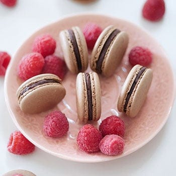

Double Chocolate Macarons

Description
A classic chocolate macaron with double the chocolate goodness! The macaron shells are baked with cocoa powder
and they are then filled with an easy chocolate ganache.
Ingredients
Chocolate Macaron Batter Ingredients
- 65 grams almond flour
- 65 grams powdered sugar
- 1 tbsp. Dutch processed cocoa powder (Note 1)
- 45 grams castor sugar (Note 2)
- 50 grams aged whites, aged (Note 3)
- 1/8 tsp. cream of tartar
Basic Chocolate Ganache Ingredients
- 50 grams couverture, semi-sweet
- 50 grams of heavy cream
- 10 grams butter
Steps
Chocolate Macaron Batter Instructions
- Set aged egg whites out at room temperature.
- Pulse almond flour and icing sugar together in a food processor to further break down any large pieces of
almond flour. (Note 4)
- Sift dry ingredients: almond flour, icing sugar and cocoa powder. Discard big pieces of almond that can't be
sifted.
- If you are new to making macarons, please read the instructions to my BEST MACARON RECIPE before attempting
to follow the rest of the instructions since it is condensed for the advanced macaron baker.
- With the balloon whisk attached, whip the room temperature egg whites on low-medium speed.
- Add cream of tartar when it becomes foamy.
- Turn up the speed to medium.
- Once the whisk starts to leave tracks in the egg whites, add sugar a little at a time.
- Turn the speed up to medium-high and whip until firm peaks, stop mixer and add gel food color if desired.
- Continue whipping on medium-high until stiff peaks.
- Fold the dry mix and meringue together until the batter becomes a "lava" or honey-like consistency.
- Transfer batter into a piping bag fitted with a round piping tip.
- On parchment paper or silicone mats, pipe out round shaped macarons.
- Rap the tray hard on the counter to remove any excess air bubbles. Use a toothpick to pop any remaining
bubbles.
- Wait until the shells become completely dry before baking.
- Bake at 325F for 12-14 minutes. Every oven is different, you may need to adjust your own temperature
settings. Please read How to Use Your Home Oven Properly for Baking Macarons if you are unsure.
- Macarons are done when the foot doesn't push back and the tops don't move when you wiggle it.
- Once baked, let cool completely before removing from the baking mat/parchment paper.
- Pair two similar sized shells together, fill them with the Chocolate Ganache filling. Place in an airtight
container in the fridge and give it 12-24 hours to mature before eating.
Basic Chocolate Ganache Instructions
- Chop up the chocolate and place in a heat safe bowl
- Heat up the heavy cream in a small sauce pan on low heat, watch it so that it doesn't over boil
- Once it comes to a light simmer, immediately pour it over the chopped chocolate.
- Let it sit on the chocolate for 1 minute
- Blend with a spatula until the chocolate is melted.
- Add the butter and incorporate.
- Place it in the fridge and let it cool off and firm up before piping (20-40 min.)
Source